Inference for Complicated Summaries
Introduction
$$ \newcommand{X}{} \newcommand{Y}{}
$$

Population
\[ \small{ \begin{array}{ccccccc} x_1 & y_1 & x_2 & y_2 & \ldots & x_m & y_m \\ \vdots & \vdots & \vdots & \vdots & \vdots & \vdots & \vdots \\ \end{array} } \]
Sample
\[ \small{ \begin{array}{ccccccc} X_1 & Y_1 & X_2 & Y_2 & \ldots & X_n & Y_n \\ \vdots & \vdots & \vdots & \vdots & \vdots & \vdots & \vdots \\ \end{array} } \]
- Last class, we talked about summaries of the relationship between income and education in a population.
- Today, we’ll talk about estimating them by summarizing a sample drawn from it exactly the same way.
- This is a recipe we’ve been using since the start of the semester.
- We’ve used sample means estimate population means. \[ \frac1n\sum_{i=1}^n Y_i \qqtext{ estimates } \frac1m\sum_{j=1}^m y_j \]
- We’ve used subsample means to estimate subpopulation means. \[ \frac{1}{N_x}\sum_{i:X_i=x}Y_i \qqtext{ estimates } \frac{1}{m_x}\sum_{j:x_j=x}y_j \qfor N_x=\sum_{i:X_i=x} 1 \qand m_x = \sum_{j:x_j=x}1 \]
- What’ll be new is that the summaries we’ll be estimating will be more complex.
- For many of them, we already have the tools to understand estimation and inference.
- For others, we’ll need new tools that we’ll cover today.
- Let’s review a few examples.
\[ \hat\theta = \hat\mu(16) - \hat\mu(12) \]
- Everything from our Lecture on Comparing Two Groups applies.
- We can ‘forget’ we have the columns we don’t want.
\[ \begin{aligned} \hat\theta &= \hat\mu(16) - \hat\mu(\le 12) && \qfor \hat\mu(\le 12) = \frac{\sum_{i:X_i \le 12} \hat\mu(X_i)}{\sum_{i:X_i \le 12} 1} \end{aligned} \]
- Same thing. We can ‘forget’ that we have the resolution we don’t want.
- If our data had come to us dichotomized already, the tools we have would apply.
- The math doesn’t care who dichotomized the data, so we can use the same tools.
\[ \begin{aligned} \hat\theta &= \frac{\sum\limits_{x=9}^{12} \qty{ \hat\mu(x) - \hat\mu(x-1) }}{4} && \qqtext{ the average over years} \\ \hat\theta &= \frac{\sum\limits_{i:X_i \in 9 \ldots 12} \qty{ \hat\mu(X_i) - \hat\mu(X_i-1) }}{\sum_\limits{i:X_i \in 9 \ldots 12} 1} && \qqtext{ the average over people} \end{aligned} \]
- These are different. There’s no way to ‘forget’ into a situation we’ve already addressed.
- We’ll need some new tools to deal with these. That’s what we’ll work on today.
Quiz
\[ \begin{aligned} \hat\theta_A &= \frac{\sum\limits_{x=9}^{12} \qty{ \hat\mu(x) - \hat\mu(x-1) }}{4} && \qqtext{ the average over years} \\ \hat\theta_B &= \frac{\sum\limits_{i:X_i \in 9 \ldots 12} \qty{ \hat\mu(X_i) - \hat\mu(X_i-1) }}{\sum_\limits{i:X_i \in 9 \ldots 12} 1} && \qqtext{ the average over people} \end{aligned} \]
One of these two estimators can be ‘unrolled’ into a simple comparison of two column means. \[ \textcolor[RGB]{17,138,178}{\hat \theta = \frac{\hat \mu(12) - \hat \mu(8)}{4}} \] Which is it?
What is the variance of this estimator \(\textcolor[RGB]{17,138,178}{\hat\theta}\)?
- You may express your answer in terms of anything that appears in previous lectures.
- e.g., \(\mathop{\mathrm{\mathop{\mathrm{V}}}}[\hat \mu(7)]\) can appear in your answer if you want it to.
Quiz Solution
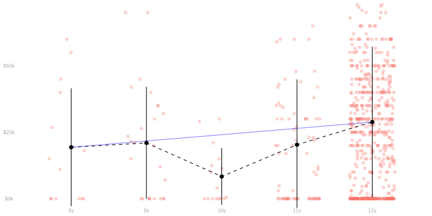
It’s the average over years that unrolls like this. \[ \begin{aligned} \frac{\sum_{x=9}^{12} \qty{ \hat\mu(x) - \hat\mu(x-1) }}{4} &= \frac{ \qty{\mu(12) - \mu(11)} + \qty{ \mu(11) - \mu(10) } + \qty{ \mu(10) - \mu(9) } + \qty{ \mu(9) - \mu(8) } }{4} \\ &= \frac{\mu(12) - \mu(8)}{4} \end{aligned} \]
It’s \(1/4^2 = 1/16\) times the variance of the difference of these two column means.
For any random variable \(X\) and constant \(a\) … \[ \mathop{\mathrm{\mathop{\mathrm{V}}}}[aX] \overset{\texttip{\small{\unicode{x2753}}}{definition}}{=} \mathop{\mathrm{E}}[(aX-\mathop{\mathrm{E}}[aX])^2] \overset{\texttip{\small{\unicode{x2753}}}{linearity of expectation + arithmetic}}{=} a^2\mathop{\mathrm{E}}[(X-\mathop{\mathrm{E}}[X])^2] \overset{\texttip{\small{\unicode{x2753}}}{definition}}{=} a^2\mathop{\mathrm{\mathop{\mathrm{V}}}}[X]. \]
In the special case \(a=1/4\) and \(X=\hat\mu(12) - \hat\mu(8)\) … \[ \begin{aligned} \mathop{\mathrm{\mathop{\mathrm{V}}}}\qty[\frac{\hat\mu(12) - \hat\mu(8)}{4}] &= \frac{1}{4^2}\mathop{\mathrm{\mathop{\mathrm{V}}}}[\hat\mu(12) - \hat\mu(8)] && \text{ is the answer I was looking for } \\ &= \frac{1}{16} \times \mathop{\mathrm{E}}\qty[ \frac{\sigma^2(12)}{N_12} + \frac{\sigma^2(8)}{N_8} ] && \text{ using a formula from our lecture on comparing two groups.} \end{aligned} \]
We know this estimator is unbiased. We can think about the difference in means for this, too. \[ \begin{aligned} \mathop{\mathrm{E}}\qty[\frac{\hat\mu(12) - \hat\mu(8)}{4}] &\overset{\texttip{\small{\unicode{x2753}}}{via linearity}}{=} \frac{\mathop{\mathrm{E}}[\hat\mu(12)] - \mathop{\mathrm{E}}[\hat\mu(8)]]}{4} \\ &\overset{\texttip{\small{\unicode{x2753}}}{via unbiasedness of subsample means}}{=} \frac{\mu(12) - \mu(8)}{4}\\ &\overset{\texttip{\small{\unicode{x2753}}}{'rolling it back up'}}{=} \frac{1}{4}\sum_{x=9}^{12}\qty{\mu(x) - \mu(x-1)}{4}. \end{aligned} \]
What This Tells Us About Inference
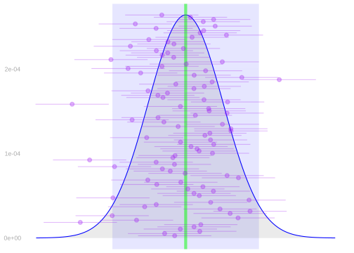
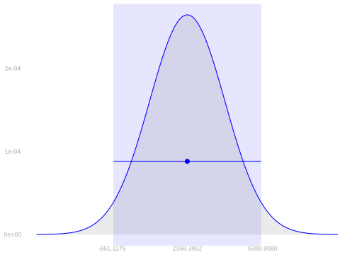
To turn a point estimator into a confidence interval, we need to know two things about its sampling distribution.
- Where it’s centered—relative to the estimation target.
- In this case, it’s exactly were we want it to be.
- Our estimator is unbiased, so it’s centered at the target.
- How wide it is, i.e. how far out from center we need to go to cover 95% of draws. ●s
- For this, we can use an estimate of the sampling distribution.
- Using one based on normal approximation, that’s \(\pm 1.96 \ \text{estimated standard deviations}\)
- To illustrate what’s going on, we can draw the picture on the left above. We …
- Place our estimated sampling distribution right at the target. It’ll have roughly the same shape.
- Think of our estimate as one of many draws ● from it and draw arms on each.
- See that, for 95% of these draws, the arms touch the target at the distribution’s center.
- We don’t know where this center \(\theta\) is. Otherwise we wouldn’t bother estimating it.
- That’s why I haven’t labeled the ticks on the \(x\)-axis.
- But we don’t need to know that to know our intervals are calibrated.
- Calibration is about where our draws are relative to our estimation target. Unbiasedness is enough.
- We can understand and anticipate the width of these intervals using our formula for the estimator’s variance.
- All we need are estimates of a few things in the formula: subpopulation standard deviations and subsample sizes.
- We can use this knowledge to design studies that give us a desired level of precision.
- We can use a pilot study to estimate these things.
- And use those estimates to choose an appropriate sample size for a second wave.
- This is what we imagined doing when we talked about the NSW Demonstration a few weeks back.
\[ \begin{aligned} \mathop{\mathrm{\mathop{\mathrm{V}}}}[\hat\theta] &= \frac{1}{16} \times \mathop{\mathrm{E}}\qty[ \frac{\sigma^2(12)}{N_{12}} + \frac{\sigma^2(8)} {N_8} ] \\ &\approx \frac{1}{16} \times \qty[\frac{\hat\sigma^2(12)}{N_{12}} + \frac{\hat\sigma^2(8)}{N_8} ] \end{aligned} \]
| \(x\) | \(N_x\) | \(\hat \mu(x)\) | \(\hat \sigma(x)\) |
|---|---|---|---|
| 8 | 14 | 19.3K | 22.2K |
| 12 | 605 | 28.8K | 28.3K |
Calibration for the Average over People
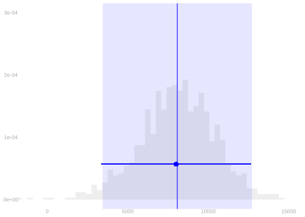
- We don’t yet know these things about our other summary: the average over people.
- Our first step will be to show that it, too, is unbiased.
- That’s really enough for calibration.
- We can use the bootstrap sampling distribution to get the right width.
- Our second step will be to work out a formula for its variance.
- This’ll allow us to understand our estimator better, design properly sized-studies, etc.
- And it’ll be the key to understanding a phenomenon we can see in the plots above.
- The average over people is harder to estimate than the average over years. At least using this data.
- We can see its bootstrap sampling distribution is at least twice as wide.
- What’s behind this? We’ll find out.
Unbiasedness
Warm-Up

- When analyzing estimators like this, it’s helpful to rewrite them as a linear combination of column means.
- That’s what we were doing when we ‘unrolled’ our average over years to see that it was the secant slope.
- And it’s helpful, if possible, to work out formulas for its coefficients with as few cases as possible.
- Why? Because when we do calculations, we have to analyze each case.
- In this example, 3 cases is enough. It often is.
- Give it a shot. Fill in the cases below.
\[ \begin{aligned} \frac{1}{4}\sum_{x\in 9 \ldots 12} \qty{ \hat \mu(x) - \hat \mu(x-1)} &= \frac{\hat\mu(12) -\hat\mu(8)}{4} &= \textcolor[RGB]{17,138,178}{\sum_{x}\hat\alpha(x)\hat\mu(x)} \qfor \hat\alpha(x) = \begin{cases} & \qqtext{if} \\ & \qqtext{if} \\ & \qqtext{if} \\ \end{cases} \end{aligned} \]
Step 1. Rewriting the Average over People in Standard Form
\[ \frac{\sum_{i:X_i \in 9 \ldots 12} \qty{ \hat \mu(X_i) - \hat \mu(X_i-1)}}{\sum_{i:X_i \in 9 \ldots 12} 1} = \sum_{x}\hat\alpha(x)\hat\mu(x) \qfor \hat\alpha(x)= \]
- We’ll do this in three steps.
- We’ll rewrite it as a linear combination of differences in subsample means.
- This’ll be a lot like what we did for aggregate means last class.
- We’ll ‘unroll’ that sum and group terms multiplying each subsample mean.
- We did this for the average over years and got something very simple.
- All but two coefficients \(\hat\alpha(x)\) were zero.
- This one will be messier.
- We’ll try to recognize a pattern in the coefficients so we don’t have to analyze every term by itself.
- We’ll rewrite it as a linear combination of differences in subsample means.
\[ \begin{aligned} \frac{\sum_{i:X_i \in 9 \ldots 12} \qty{ \hat\mu(X_i) - \hat\mu(X_i-1) }}{\sum_{i:X_i \in 9 \ldots 12} 1} &= \sum_{x \in 9 \ldots 12} P_x \ \qty{ \hat\mu(x) - \hat\mu(x-1) } \quad \text{ for } \quad P_x = \frac{N_x}{\sum_{x \in 9 \ldots 12}N_x} \\ &= \sum_x \hat \alpha(x) \hat \mu(x) \qfor \hat\alpha(x) = \begin{cases} P_{12} & \text{ if } x = 12 \\ P_{x} - P_{x+1} & \text{ if } x \in \{9 \ldots 11\} \\ -P_9 & \text{ if } x = 8 \end{cases} \end{aligned} \]
Step 2. Estimator’s Expectation in Standard Form
\[ \begin{aligned} \mathop{\mathrm{E}}\qty[\sum_x \hat\alpha(x) \hat \mu(x)] &\overset{\texttip{\small{\unicode{x2753}}}{linearity of expectations}}{=} \sum_x \mathop{\mathrm{E}}\qty[\hat\alpha(x) \hat\mu(x)] \\ &\overset{\texttip{\small{\unicode{x2753}}}{law of iterated expectations}}{=} \sum_x \mathop{\mathrm{E}}\qty{ \mathop{\mathrm{E}}\qty[\hat\alpha(x) \hat \mu(x) \mid X_1 \ldots X_n] } \\ &\overset{\texttip{\small{\unicode{x2753}}}{linearity of conditional expectations}}{=} \sum_x \mathop{\mathrm{E}}\qty{ \hat \alpha(x) \mathop{\mathrm{E}}[\hat \mu(x) \mid X_1 \ldots X_n] } \\ &\overset{\texttip{\small{\unicode{x2753}}}{conditional unbiasedness of subsample means}}{=} \sum_x \mathop{\mathrm{E}}\qty{ \hat \alpha(x) \mu(x) } \\ &\overset{\texttip{\small{\unicode{x2753}}}{linearity of expectations}}{=} \sum_x \mathop{\mathrm{E}}\qty{ \hat \alpha(x) } \mu(x) \end{aligned} \]
- This tells us we have an unbiased estimator if
- the coefficients of our estimation target in standard form
- are the expected value of our estimator’s coefficients.
Step 3. Dealing with Specifics
\[ \begin{aligned} &\text{Does} \quad \mathop{\mathrm{E}}\qty{ \hat \alpha(x) } = \alpha(x) \qfor &&\hat\alpha(x) = \begin{cases} P_{12} & \text{ if } x = 12 \\ P_{x} - P_{x+1} & \text{ if } x \in \{9 \ldots 11\} \\ -P_9 & \text{ if } x = 8 \end{cases} \\ \qqtext{and} &&&\alpha(x) = \begin{cases} p_{12} & \text{ if } x = 12 \\ p_{x} - p_{x+1} & \text{ if } x \in \{9 \ldots 11\} \\ -p_9 & \text{ if } x = 8 \end{cases} \end{aligned} \]
- For this estimator, that question boils down to the unbiasedness of sample proportions. Almost.
- These aren’t proportions of our whole sample. They’re proportions of the ‘high school subsample’.
- But we we can show that \(\mathop{\mathrm{E}}[P_x]=p_x\) for all \(x\) via a sort of ‘two-stage sampling argument’.
- First flip a coin to decide if \(X \in \{9 \ldots 12\}\) or not.
- Then roll a die to decide which value you take within the group.
- \(P_x\) is, conditional on the coin flip, a sample proportion.
- So, it’s unbiased for the population proportion \(p_x\).
Beyond these two summaries
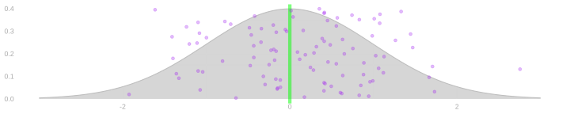
- We’ve shown that our two specific estimators are unbiased.
- More generally, we’ve shown that a linear combination of subsample means is unbiased …
- if our estimation target is a linear combination of subpopulation means …
- … in which our estimator’s coefficients are replaced by their expected values.
\[ \begin{aligned} \mathop{\mathrm{E}}\qty[\sum_x \hat\alpha(x) \hat \mu(x) ] &= \sum_x \mathop{\mathrm{E}}[\hat\alpha(x)] \mu(x) \\ \end{aligned} \]
- This can be used for all kinds of summaries.
- Almost every target we’ll talk about this semester is a linear combination like this.
- And the ones that aren’t, like ratios, can be approximated by linear combinations.
Variance
We’ll continue from here.
Review: The Law of Total Variance
\[ \mathop{\mathrm{\mathop{\mathrm{V}}}}[Y] = \mathop{\mathrm{E}}\qty{\mathop{\mathrm{\mathop{\mathrm{V}}}}( Y \mid X ) } + \mathop{\mathrm{\mathop{\mathrm{V}}}}\qty{\mathop{\mathrm{E}}( Y \mid X ) } \]
- The Law of Total Variance breaks Variance into within-group and between-group terms.
- It’s like the Law of Iterated Expectations, but for Variance.
- It’s a useful way to decompose the variance of a random variable.
- Think about where most of the variance in \(Y\) is coming from in the two populations shown above.
A Variance Decomposition for our Estimator
\[ \mathop{\mathrm{\mathop{\mathrm{V}}}}\qty[\sum_x \hat\alpha(x) \hat\mu(x)] = \textcolor{blue}{\sum_x \sigma^2(x) \times \mathop{\mathrm{E}}\qty[ \frac{\hat\alpha(x)^2}{N_x} ]} + \textcolor{red}{\mathop{\mathrm{\mathop{\mathrm{V}}}}\qty[ \sum_x \mu(x) \hat \alpha(x) ]} \qfor \sigma^2(x) = \mathop{\mathrm{\mathop{\mathrm{V}}}}[Y_i \mid X_i=x] \]
- We can use the law of total variance to decompose our estimator’s variance into two parts.
- The first reflects the randomness of our subsample means.
- The second reflects the randomness of our coefficients \(\hat\alpha(x)\).
- Note that if our coefficients aren’t random, i.e. \(\hat\alpha(x)=\mathop{\mathrm{E}}[\hat\alpha(x)]\), the second term is zero.
- And often, even if they are random, the first term is much bigger.
- As a result, we can usually get away with thinking about the first part only.
- Note that the second part is positive—it’s the variance of something.
- Ignoring it gives us a lower bound on the actual variance of our estimator.
The Formula
We won’t get deep into the derivation now. I’ll guide you through it in the homework.
\[ \small{ \begin{aligned} \mathop{\mathrm{\mathop{\mathrm{V}}}}\qty[ \sum_x \alpha(x) \hat \mu(x) ] &= \mathop{\mathrm{E}}\qty[ \mathop{\mathrm{\mathop{\mathrm{V}}}}\qty{ \sum_x \hat\alpha(x) \hat \mu(x) \mid X_1 \ldots X_n }] \quad &&+ \quad \mathop{\mathrm{\mathop{\mathrm{V}}}}\qty[ \mathop{\mathrm{E}}\qty{\sum_x \hat\alpha(x) \hat \mu(x) \mid X_1 \ldots X_n} ] \\ &= \mathop{\mathrm{E}}\qty[ \mathop{\mathrm{\mathop{\mathrm{V}}}}\qty{ \sum_x \hat\alpha(x) \hat \mu(x) \mid X_1 \ldots X_n }] \quad &&+ \quad \mathop{\mathrm{\mathop{\mathrm{V}}}}\qty[ \sum_x \hat\alpha(x) \mathop{\mathrm{E}}\qty{ \hat \mu(x) \mid X_1 \ldots X_n} ] \\ &= \mathop{\mathrm{E}}\qty[ \mathop{\mathrm{\mathop{\mathrm{V}}}}\qty{ \sum_x \hat \alpha(x) \hat \mu(x) \mid X_1 \ldots X_n }] \quad &&+ \quad \mathop{\mathrm{\mathop{\mathrm{V}}}}\qty[ \sum_x \hat\alpha(x) \mu(x) ] \\ &= \textcolor{blue}{\sum_x \mathop{\mathrm{E}}\qty[ \hat\alpha(x)^2 \mathop{\mathrm{\mathop{\mathrm{V}}}}\qty{\hat\mu(x) \mid X_1 \ldots X_n}]} \quad &&+ \quad \textcolor{blue}{\sum_x \sum_{x'} \mu(x) \mu(x') \mathop{\mathrm{Cov}}\qty[\hat\alpha(x),\ \hat\alpha(x')]} \\ &=\textcolor{blue}{ \sum_x \sigma^2(x) \times \mathop{\mathrm{E}}\qty[ \frac{\hat\alpha(x)^2}{N_x} ]} \quad &&+ \quad \textcolor{blue}{\sum_x \sum_{x'} \mu(x) \mu(x') \mathop{\mathrm{Cov}}\qty[\hat\alpha(x),\ \hat\alpha(x')]} \end{aligned} } \]
Variance Estimation
\[ \mathop{\mathrm{\mathop{\mathrm{V}}}}\qty[\sum_x \alpha(x) \hat \mu(x)] \ge \textcolor{blue}{\sum_x \sigma^2(x) \times \mathop{\mathrm{E}}\qty[ \frac{\hat\alpha(x)^2}{N_x} ] \quad \text{ where } \quad \sigma^2(x) = \mathop{\mathrm{\mathop{\mathrm{V}}}}[Y_i \mid X_i=x]} \]
LThe lower bound has two quantities we don’t know, but can estimate easily.
- The subpopulation variances \(\sigma^2(x)\).
- The expected value of the ratio of the coefficient squared and the sample size, \(\hat\alpha(x)^2 / N_x\).
The subsample variances are good esimates of the subpopulation variances \[ \sigma^2(x) \approx \hat\sigma^2(x) := \frac{1}{N_x} \sum_{i:X_i=x} \qty{Y_i - \hat\mu(x)}^2 \]
The squared coefficient / subsample size ratio is usually a good estimate of its expectation.
\[ \frac{\hat\alpha(x)^2}{N_x} \approx \mathop{\mathrm{E}}\qty[\frac{\hat\alpha(x)^2}{N_x}] \]
- Plugging them in gives us an estimate of our summary’s variance lower bound.
\[ \mathop{\mathrm{\mathop{\mathrm{V}}}}[\hat\theta] \ge \sum_x \ \frac{\hat\sigma^2(x)\hat\alpha(x)^2}{N_x} \]
The Average Over Years
\[ \hat\sigma_{\hat\theta}^2 = \sum_x \frac{\hat\alpha^2(x) \ \hat\sigma^2(x)}{N_x} \]
where
\[ \begin{array}{l|lll} x & 8 & 9 & 10 & 11 & 12 & 13 & \ldots & 20 \\ \hline \hat\alpha^2(x) & 0.06 & 0.00 & 0.00 & 0.00 & 0.06 & 0.00 & \ldots & 0.00 \\ \hat\sigma^2(x) & 492M & 444M & 113M & 603M & 803M & 1B & \ldots & 14B \\ N_x & 14 & 26 & 16 & 75 & 605 & 357 & \ldots & 71 \\ \frac{\alpha^2(x) \ \hat\sigma^2(x)}{N_x} & 2.20M & 0.00 & 0.00 & 0.00 & 83.01K & 0.00 & \ldots & 0.00 \\ \end{array} \]
Exercise. Use a caricature of this table to approximate our estimator’s variance.
Comparing Our Two Summaries
\[ \mathop{\mathrm{\mathop{\mathrm{V}}}}\qty[\sum_x \hat\alpha(x) \hat\mu(x)] \ge \mathop{\mathrm{E}}\qty[ \mathop{\mathrm{\mathop{\mathrm{V}}}}\qty{ \sum_x \hat\alpha(x) \hat \mu(x) \mid X_1 \ldots X_n }] = \sum_x \sigma^2(x) \times \mathop{\mathrm{E}}\qty[ \frac{\hat\alpha(x)^2}{N_x} ] \]
Let’s think about what this means for our two examples. \[ \small{ \begin{aligned} \hat\theta_{\text{years}} &= \frac14\sum_{x=9}^{12} \qty{ \hat\mu(x) - \hat\mu(x-1)} = \sum_x \alpha(x) \hat \mu(x) \qfor \alpha(x) = \begin{cases} \hphantom{-}\frac14 & \text{ if } x = 12 \\ -\frac14 & \text{ if } x= 8 \\ 0 & \text{ otherwise} \end{cases} \\ \hat\theta_{\text{people}} &= \sum_{x=9}^{12} P_x \qty{ \hat\mu(x) - \hat\mu(x-1)} = \sum_x \hat \alpha(x) \hat \mu(x) \qfor \hat\alpha(x) = \begin{cases} \hphantom{-}P_{12} & \text{ if } x = 12 \\ P_{x} - P_{x+1} & \text{ if } x \in \{9 \ldots 11\} \\ -P_9 & \text{ if } x = 8 \end{cases} \end{aligned} } \]
We’ve seen that the variance of our estimate of the average-over-years summary has large variance.
The problem was that it paired a relatively large weight, \(\alpha(x)=-1/4\), with a very small subsample size \(N_8=14\).
And we know the average-over-people summary has an even larger variance. Let’s compare.
A Comparison
\[ \begin{array}{l|c|ccccc|c} & x & 8 & 9 & 10 & 11 & 12 & \sum \\ & N_x & 14 & 26 & 16 & 75 & 605 & 736 \\ & \hat\sigma^2(x) & 492M & 444M & 113M & 603M & 803M & \\ &\hline \\ \text{for}\ \ \hat\theta_{\text{people}} &\hat\alpha^2(x) & 0.00 & 0.00 & 0.01 & 0.52 & 0.68 & \\ &\frac{\hat\sigma^2(x)\alpha^2(x)}{N_x} & 44K & 3K & 45K & \textcolor{blue}{4.2M} & 897K & 5.2M \\ \hline \\ \text{for}\ \ \hat\theta_{\text{years}} &\hat\alpha^2(x) & 0.06 & 0.00 & 0.00 & 0.00 & 0.06 & \\ &\frac{\hat\sigma^2(x) \alpha^2(x)}{N_x} & \textcolor{blue}{2M} & 0 & 0 & 0 & 83K & 2M \\ \\ \end{array} \]
- For both summaries, most of the variance comes from one term.
- Let’s try to compare their variances ignoring all but the biggest term in each.
- For the average over years, it’s the \(x=8\) subsample, with a sample size of \(N_x=14\) and a coefficient of \(-1/4\).
- For the average over people, it’s the \(x=11\) subsample, with …
- a sample size \(N_x=75\) that’s roughly 4x bigger.
- but a coefficient of \(-0.72\) that’s roughly 3x bigger, too.
- Variance grows with the square of the coefficient divided by the sample size.
- So this approximation suggests variance would be roughly \(3^2 / 4 \approx 2.25x\) bigger for the average over people.
- That’s not far off what we get when we compare bootstrap variance estimates.
- That’s 2.4x bigger.
- Intuitive Conclusion.
- Summaries that involve the means of small groups are hard to estimate.
- But that’s not all that matters. It matters how much they’re used.
What About The Other Part?
\[ \mathop{\mathrm{\mathop{\mathrm{V}}}}\qty[ \sum_x \alpha(x) \hat \mu(x) ] = \mathop{\mathrm{E}}\qty[ \mathop{\mathrm{\mathop{\mathrm{V}}}}\qty{ \sum_x \hat\alpha(x) \hat \mu(x) \mid X_1 \ldots X_n }] \quad + \quad \mathop{\mathrm{\mathop{\mathrm{V}}}}\qty[ \mathop{\mathrm{E}}\qty{\sum_x \hat\alpha(x) \hat \mu(x) \mid X_1 \ldots X_n} ] \]
- What we’ve been thinking about so far is the first part of the variance.
- That’s zero when the coefficients are constants, but not when they’re random.
- Because this part was larger for the summary with random coefficients, that implied its variance would be larger.
- If it had been smaller, that wouldn’t have done much for us.
- But to gain intuition about the term we left out, let’s approximate it.
- We can use the bootstrap to estimate the variance of our summary—the whole thing.
- We’ll use the variance (draws from) the bootstrap sampling distribution. It’s 5.49M.
- Our estimate for the first part only — based on our table — was 5.16M.
- That suggests that the second part should be roughly \(5.49M - 5.16M \approx 300K\).
Summary
- When we’re estimating is a linear combination of the subpopulation means, the sample version is unbiased …
- if the sample coefficients are unbiased estimates of the population ones.
\[ \small{ \hat \theta = \sum_x \alpha(x) \hat\mu(x) \quad \text{ satisfies } \mathop{\mathrm{E}}[\hat\theta] = \theta } \]
That’s something you have to think about case-by-case.
But proportions—even proportions of subsamples—are, in fact, unbiased.
Its variance is determined by the variance in each subpopulation, the coefficients, and the subsample sizes.
And we can estimate it. Or, at least, a lower bound. \[ \small{ \mathop{\mathrm{\mathop{\mathrm{V}}}}[ \hat\theta ] \ge \sum_x \sigma^2(x) \alpha^2(x) \times \mathop{\mathrm{E}}\qty[ \frac{1}{N_x} ] \approx \sum_x \hat\sigma^2(x)\alpha^2(x) \times \frac{1}{N_x} =: \hat\sigma_{\hat\theta}^2 } \]
Fundamentally, we’re going to get an imprecise estimate if a small subsample has a large weight.
By imprecise, we mean a large standard error and a wide confidence interval.
Formula vs. Bootstrap
\[ \small{ \mathop{\mathrm{\mathop{\mathrm{V}}}}[ \hat\theta ] \ge \sum_x \sigma^2(x) \times \mathop{\mathrm{E}}\qty[\frac{\hat\alpha^2(x)}{N_x} ] \approx \sum_x \hat\sigma^2(x) \times \frac{\alpha^2(x)}{N_x} =: \hat\sigma_{\hat\theta}^2 } \]
- We can use this formula construct a confidence interval based on normal approximation.
\[ \small{ \theta \in \qty[ \hat \theta - 1.96\hat\sigma_{\hat\theta}, \ \hat \theta + 1.96\hat\sigma_{\hat\theta}] \quad \text{ with probability } \approx .95 \qfor \hat\sigma_{\hat\theta}^2 = \sum_x \hat\sigma^2(x)\times \frac{\hat\alpha^2(x)}{N_x} } \]
- Or we could use the bootstrap. Which do you prefer? And why?